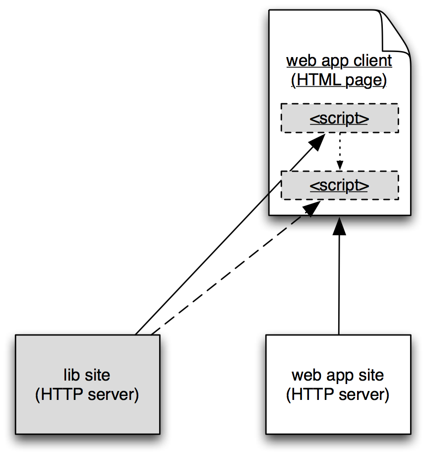
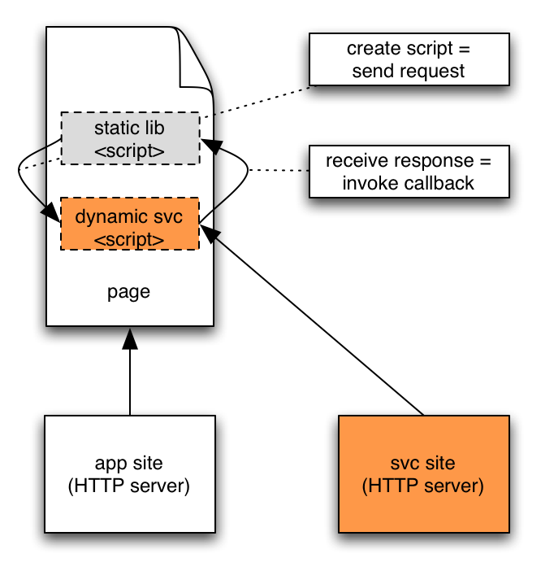

Google
Developer
Day2008
Developer
Day2008
Maps API — Architecture and Principles
孟熙 (Steffen Meschkat)

Copyright 2008 Google, Inc.
Concepts
Why Maps
- The other failsafe way of organizing information:
- 0 — Search.
- 1 — Order chronologically.
- 2 — Draw a map.
- Putting it on a map is a great way to organize information.
The Google Maps API
- — A library of "HTML elements" for places.
- — An "HTML element" with augmented behavior.
- — A page format for your content.
- — A mashup application component.
Architecture of the API
The API at a Glance
- Namespace:
google.maps.*orG*. - Core:
Map2,LatLng,Point,Event. - User Interface:
LargeMapControl,ZoomControl,ScaleControl,OverviewMapControl. - Content:
Marker,Polyline,Polygon,GroundOverlay,ScreenOverlay,InfoWindow,GeoXml. - Services:
ClientGeocoder. - Extension Interfaces:
Control,Overlay,TileLayer. - Components:
Keyboard,MarkerManager. - Utilities:
XmlHttp,Xml,Xslt.
Hello World
hello.html
<html>
<head>
<script src="http://ditu.google.com/?file=googleapi"></script>
</head>
<body onload="hello()" onunload="google.maps.Unload()">
<div id="map" style="width:400px;height:300px"></div>
<script>
function hello() {
var map = new google.maps.Map2(document.getElementById("map"));
var point = new google.maps.LatLng(39.905523, 116.400146);
map.setCenter(point, 2);
var marker = new google.maps.Marker(point);
map.addOverlay(marker);
marker.openInfoWindowHtml("Hello World!");
}
</script>
</body>
</html>Hello again, World
hello.html
<html>
<head>
<script src="http://ditu.google.com/?file=googleapi"></script>
</head>
<body onload="hello()" onunload="google.maps.Unload()">
<div id="map" style="width:400px;height:300px"></div>
<script>
function hello() {
var map = new google.maps.Map2(document.getElementById("map"));
var point = new google.maps.LatLng(39.905523, 116.400146);
map.setCenter(point, 2);
var marker = new google.maps.Marker(point);
map.addOverlay(marker);
marker.openInfoWindowHtml("Hello World!");
}
</script>
</body>
</html>How the maps API is loaded
Page from application site —
- 1. loads library boot script from library site,
- 2. which loads compiled, versioned script library from library site,
- 3. and uses functionality provided by the library.
Note
- Two step process to manage versions with safe caching.
- Later, loads even more script when it's needed.
Maps API Boot Code
Application page:
hello.html
<script language="JavaScript"
src="http://ditu.google.com/?file=googleapi">
</script>
Library boot script:
http://ditu.google.com/?file=googleapi
document.write('<script src="http://ditu.google.com/intl/zh-CN/' +
'mapfiles/114/maps2.api/main.js' +
'"></script>');
Maps API Library Code
.../mapfiles/114/maps2.api/main.js
/* Copyright 2005-2007 Google. */ (function(){ function
ba(a,b,c){a.prototype[b]=c}function ca(a,b,c){a[b]=c}function
da(a,b){for(var c=0;c<b.length;++c){var d=b[c],e=d[1];if(d[0]){var
f=ea(a,d[0]);if(f.length==1)aa(f[0],e);else{var g=window;for(var
h=0;h<f.length-1;++h){var
i=f[h];if(!g[i])g[i]={};g=g[i]}ca(g,f[f.length-1],e)}}
...,[pq,"Map2"],[qq,"MapType"],
[rq,"MapTypeControl"],... })()
Note
- Condensation to reduce code size.
- Wrap in anonymous namespace to isolate library and application code.
- Export public API to make it accessible.
Hello Beijing
hellobeijing.html
<div id="map" style="width:400px;height:300px"></div>
<form id="geo"><input id="address"/></form>
<script>
function hello() {
var map = new google.maps.Map2(document.getElementById("map"));
var geocoder = new google.maps.ClientGeocoder;
$('geo').onsubmit = function() {
var address = $('address').value;
geocoder.getLatLng(address, function(latlng) {
map.setCenter(latlng);
var marker = new GMarker(latlng);
map.addOverlay(marker);
marker.openInfoWindowHtml("Hello " + address + "!");
});
};
}
</script>How services talk to maps — JSONP
Page with the API library —
- 1. registers callback function to receive result,
- 2. encodes request and callback in script URL,
- 3. creates
SCRIPTelement with URL insrc.
Server —
- 4. executes service request,
- 5. creates callback invocation with result data as argument.
Page —
- 6. loads script, invoking the callback.
JSONP Session
Request URL
http://maps.google.com/maps/geo ?q=beijing &output=json &callback=cbstore.cb001 &hl=en &key=xxx
Response Body
cbstore.cb001({
name: "beijing",
Status: { code: 200, request: "geocode" },
Placemark: {
address: "Beijing, China",
Point: {
coordinates: [ 116.400146, 39.905523, 0 ]
}
}
});
The Google Maps API
- — A library of "HTML elements" for places.
- — An "HTML element" with augmented behavior.
- — A page format for your content.
- — A mashup application component.
- — An API to extend ditu.google.com.
Mapplet
hello.xml
<?xml version="1.0" encoding="UTF-8"?>
<Module>
<ModulePrefs>
<Require feature="sharedmap"/>
</ModulePrefs>
<Content type="html"><![CDATA[
<h2>Hello World!</h2>
<script>
var map = new GMap2;
var point = new GLatLng(39.905523, 116.400146);
map.setCenter(point, 2);
var marker = new GMarker(point);
map.addOverlay(marker);
marker.openInfoWindowHtml("Hello World!");
</script>
]]></Content>
</Module>
Mapplets Architecture

How mapplets talk to maps — IDC

In the mapplet —
- 1. API function calls are encoded in hash part of a URL.
- 2. Mapplet creates an iframe in the
maps.google.comdomain with URL in src.
In the maps page —
- 3. Iframe loads, reads the function call from URL and forwards it to map.
- 4. Map executes call.
IDC
Note
- All communication takes place in the browser. No server round trips!
- Analog for communication from page to mapplet (for events and return values).
- Safely circumvents cross site scripting restrictions.
IDC Session Fragment
Map sending event
http://maps.gmodules.com/ig/idc
#maps.google.com
&000001remote_iframe_22
%261405%26top%26%26top
%2613%252C34%252Cclick%261%252C1%252C37.71859%252C6.679688&
Mapplet sending back command to open info
window
http://maps.google.com/maps/mpl/relay
#maps.gmodules.com
&000002top%26319%26remote_iframe_22%26%26remote_iframe_22
%2613%252C3%252C0%252C1%252C1%252CHello%252520World!%252C0%252C0&
Summary API Architecture
Maps API provides library and services to any web page
—
- Library loaded by two-step boot procedure to manage versions.
- Services by JSON with Padding (JSONP).
- API exported to public namespaces
google.maps.*orG.
Mapplet API &mdash
- Allows to extend
ditu.google.comusing the Maps API, - Communicates with
ditu.google.compage by IDC.
更多信息，请访问
http://code.google.com/intl/zh-CN/
http://code.google.com/intl/zh-CN/